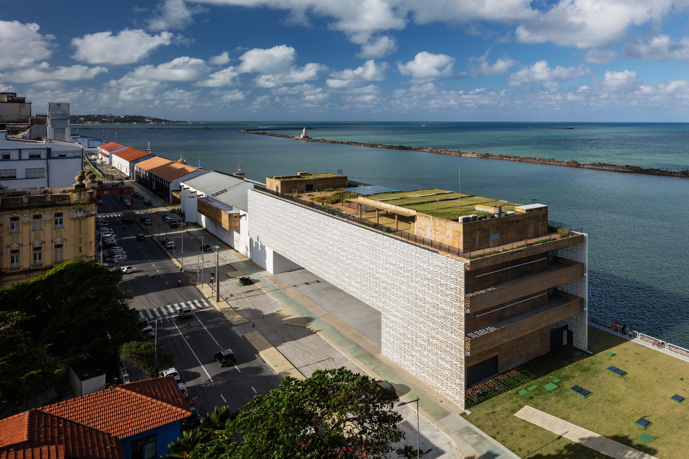

Outros pontos turísticos
Conhecer Recife Antigo
Além do Marco Zero, existem muitos outros pontos turísticos que vale a pena visitar no Recife Antigo. Destacamos alguns deles a seguir:
1. Museu Cais do Sertão
2. Museu Paço do Frevo
3. Rua do Bom Jesus